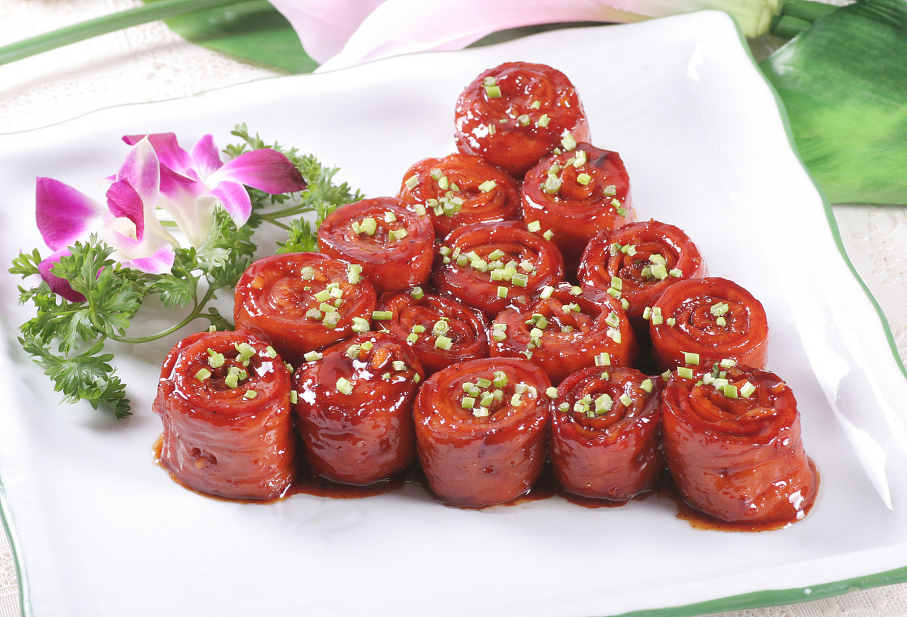
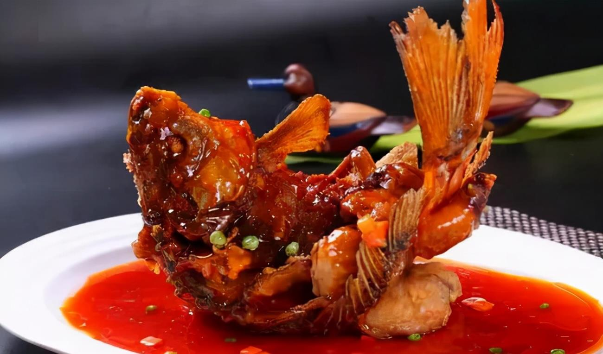
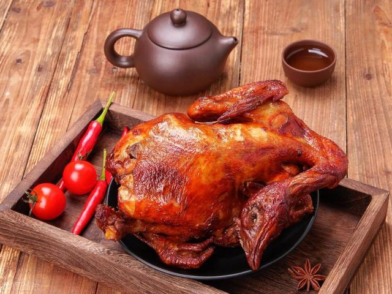

什么是鲁菜？
鲁菜，即山东菜，是中国传统四大菜系之一，历史悠久，源远流长。鲁菜以其清鲜、脆嫩、味浓、色亮而著称，讲究刀工和火候。
历史背景
鲁菜的历史可以追溯到春秋战国时期，经过数千年的发展，形成了独特的烹饪技艺和风味。山东自古以来就是富庶之地，物产丰富，为鲁菜的发展提供了丰富的食材。
著名菜肴

九转大肠
这道菜以其独特的口感和复杂的烹饪方法闻名，味道香浓，色泽红亮。

糖醋鲤鱼
糖醋鲤鱼是鲁菜中的经典菜肴，外酥里嫩，酸甜适口，深受食客喜爱。

德州扒鸡
德州扒鸡以其皮酥肉嫩，味道鲜美而著称，是鲁菜中的一道名菜。